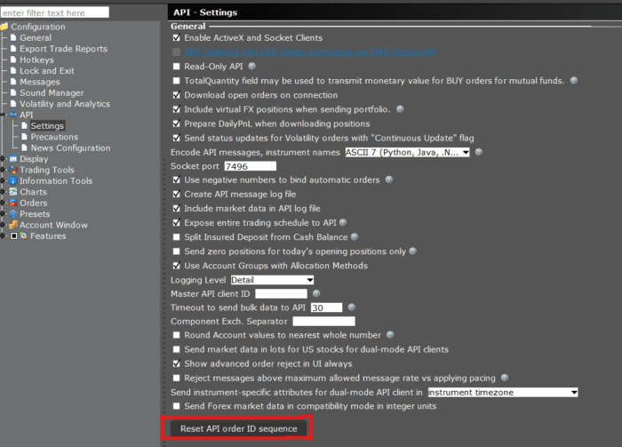

The nextValidId event provides the next valid identifier needed to place an order. It is necessary to use an order ID with new orders which is greater than all previous order IDs used to place an order. While requests such as EClient.reqMktData will not increment the minimum request ID value, more than one market data request cannot use the same request ID at the same time.
The nextValidId value may be queried on each request. However, it is often recommended to make a request once at the beginning of the session, and then locally increment the value for each request.
numIds: int. This parameter will not affect the value returned to nextValidId but is required.
)
Requests the next valid order ID at the current moment be returned to the EWrapper.nextValidId function.
self.reqIds(-1)
orderId: int. Receives next valid order id.
)
Will be invoked automatically upon successful API client connection, or after call to EClient.reqIds.
def nextValidId(self, orderId: int):
print("NextValidId:", orderId)
The next valid identifier is persistent between TWS sessions.
If necessary, you can reset the order ID sequence within the API Settings dialogue. Note however that the order sequence Id can only be reset if there are no active API orders.
